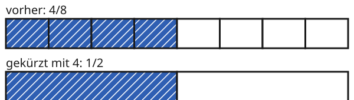

Brüche kürzen
Mit einem KI-Tutor lernen
Ein KI-Tutor erklärt dir diese Seite und hilft dir bei den Übungen. Wähl deinen Assistenten:
Mit Claude öffnen Mit ChatGPT öffnen Mit Mistral Vibe öffnen
Du nutzt dein eigenes Konto beim Anbieter. Der Assistent ist kein Angebot von lernapps.net: lernapps liefert nur Inhalte und Übungen. Die Wahl gilt für alle Seiten, nur auf diesem Gerät.
Einstieg
Von einer Pizza mit 8 Stücken sind 4 übrig. Du kannst sagen: Es sind der Pizza. Einfacher ist es zu sagen: Es ist die Hälfte. Beides ist derselbe Anteil. Im zweiten Fall hast du die kleinen Stücke zu größeren zusammengefasst.
Beim Erweitern hast du die Teile feiner gemacht. Jetzt machst du es umgekehrt.
Anschaulich erklärt
Oben siehst du den Streifen mit . Unten sind immer 4 Teile zu einem Teil zusammengefasst. Das Ganze ist beide Male der ganze Streifen. Das Blau reicht gleich weit. Nur die Zahl der Teile ist anders.

Vergleiche, wie weit das Blau jeweils reicht. Zähle dann die Teile.
Quelle: eigene Zeichnung. Lizenz: CC-BY-4.0.Das Zusammenfassen heißt Kürzen. Es geht nur, wenn sich Zähler und Nenner beide ohne Rest durch dieselbe Zahl teilen lassen. Dann teilst du beide durch diese Zahl. Die Brüche und sind gleichwertig.
Ausprobieren
Oben steht der Bruch . Unter „Kürzen mit“ wählst du eine Zahl. Zu Beginn steht dort die 1: Der Streifen unten ist gleich dem oberen. Probiere die Zahlen 2, 3, 4 und 6. Bei welchen klappt es? Bei welchen nicht, und warum?
vorher: 8/12
gekürzt mit 1: 8/12
Oben steht ein Streifen für den Bruch 8/12. Du wählst eine Zahl und kürzt damit. Unten steht derselbe Streifen, immer so viele Teile zu einem zusammengefasst. Die blaue Länge bleibt gleich. Mit 2 wird aus 8/12 der Bruch 4/6, mit 4 wird es 2/3. Mit 3 und mit 6 geht es nicht, denn 8 lässt sich nicht durch 3 und nicht durch 6 ohne Rest teilen.
Merke
- Kürzen
Einen Bruch kürzen heißt: Zähler und Nenner durch dieselbe Zahl teilen. Das geht nur mit einem gemeinsamen Teiler von Zähler und Nenner.
Dabei ist der Zähler, der Nenner und die Zahl, durch die du kürzt.
Wichtig
Beim Kürzen wird geteilt, nicht subtrahiert, und beide Zahlen werden durch dieselbe Zahl geteilt. Der Anteil ändert sich nicht. Ein Bruch ist vollständig gekürzt, wenn Zähler und Nenner keinen gemeinsamen Teiler mehr haben, der größer als 1 ist.
Zwölf Achtzehntel kürzen
Kürze so weit wie möglich.
| Gemeinsamer Teiler | 12 und 18 sind beide durch 6 teilbar |
|---|---|
| Zähler | 12 : 6 = 2 |
| Nenner | 18 : 6 = 3 |
| Ergebnis | |
| Kontrolle | 2 und 3 haben keinen gemeinsamen Teiler außer 1: vollständig gekürzt |
Übung
Übung
Drei Beispielaufgaben, jede mit ihrer Lösung:
Aufgabe Nr. 1
Kürze den Bruch 6/10 mit 2. Wie heißt der neue Zähler? Gib nur die Zahl ein.
Tipp
Teile den Zähler durch die Zahl, mit der du kürzt.
Lösung
- Kürzen heißt: Zähler und Nenner durch dieselbe Zahl teilen, hier durch 2.
- Der Zähler 6 geteilt durch 2 ist 3.
Richtige Antwort: 3
Aufgabe Nr. 2
Kürze den Bruch 8/10 mit 2. Wie heißt der neue Zähler? Gib nur die Zahl ein.
Tipp
Teile den Zähler durch die Zahl, mit der du kürzt.
Lösung
- Kürzen heißt: Zähler und Nenner durch dieselbe Zahl teilen, hier durch 2.
- Der Zähler 8 geteilt durch 2 ist 4.
Richtige Antwort: 4
Aufgabe Nr. 3
Kürze den Bruch 18/24 mit 6. Wie heißt der neue Zähler? Gib nur die Zahl ein.
Tipp
Teile den Zähler durch die Zahl, mit der du kürzt.
Lösung
- Kürzen heißt: Zähler und Nenner durch dieselbe Zahl teilen, hier durch 6.
- Der Zähler 18 geteilt durch 6 ist 3.
Richtige Antwort: 3
Übung
Drei Beispielaufgaben, jede mit ihrer Lösung:
Aufgabe Nr. 1
Kürze den Bruch 6/8 mit 2. Wie heißt der neue Nenner? Gib nur die Zahl ein.
Tipp
Teile den Nenner durch die Zahl, mit der du kürzt.
Lösung
- Kürzen heißt: Zähler und Nenner durch dieselbe Zahl teilen, hier durch 2.
- Der Nenner 8 geteilt durch 2 ist 4.
Richtige Antwort: 4
Aufgabe Nr. 2
Kürze den Bruch 6/10 mit 2. Wie heißt der neue Nenner? Gib nur die Zahl ein.
Tipp
Teile den Nenner durch die Zahl, mit der du kürzt.
Lösung
- Kürzen heißt: Zähler und Nenner durch dieselbe Zahl teilen, hier durch 2.
- Der Nenner 10 geteilt durch 2 ist 5.
Richtige Antwort: 5
Aufgabe Nr. 3
Kürze den Bruch 18/24 mit 6. Wie heißt der neue Nenner? Gib nur die Zahl ein.
Tipp
Teile den Nenner durch die Zahl, mit der du kürzt.
Lösung
- Kürzen heißt: Zähler und Nenner durch dieselbe Zahl teilen, hier durch 6.
- Der Nenner 24 geteilt durch 6 ist 4.
Richtige Antwort: 4
Übung
Lösung
3/4 richtige Antwort
3 und 4 haben keinen gemeinsamen Teiler außer 1. Der Bruch lässt sich nicht weiter kürzen.
4/6
Beide Zahlen sind gerade, also durch 2 teilbar. Der Bruch lässt sich noch zu 2/3 kürzen.
6/9
6 und 9 sind beide durch 3 teilbar. Der Bruch lässt sich noch zu 2/3 kürzen.
5/10
5 und 10 sind beide durch 5 teilbar. Der Bruch lässt sich noch zu 1/2 kürzen.
Vollständig gekürzt ist ein Bruch, wenn Zähler und Nenner keinen gemeinsamen Teiler mehr haben, der größer als 1 ist.
Mehr dazu:
Übung
Lösung
Richtige Antwort: Die Aussage stimmt.
Beim Kürzen teilst du beide Zahlen durch dieselbe Zahl, und das muss ohne Rest gehen. Haben sie nur den Teiler 1 gemeinsam, ändert sich der Bruch nicht mehr.
Mehr dazu: